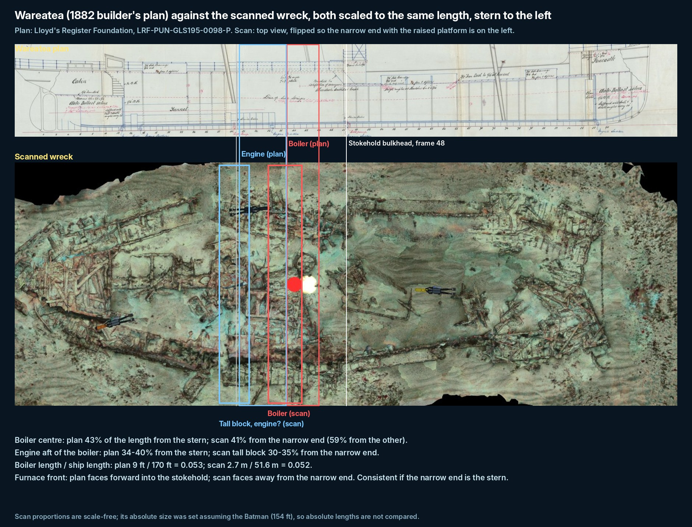
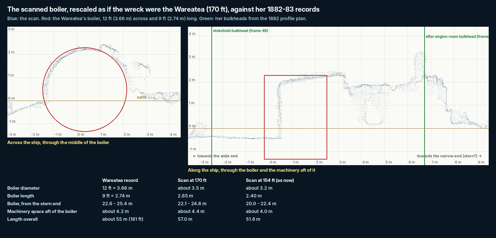
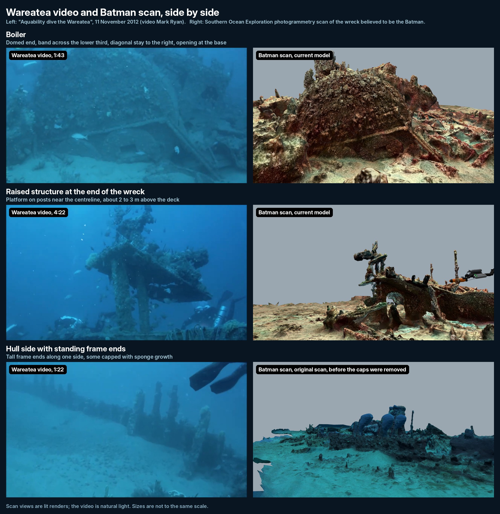

Southern Ocean Exploration · Wreck assessment
Batman or Wareatea? Identification assessment of a steamship wreck in the Ships' Graveyard, Bass Strait
The steamship wreck we surveyed at 47 m in the Ships' Graveyard, catalogued by us as the armed hopper barge Batman (VHR S65), is more consistent with the coastal steamer Wareatea (VHR S710). Scaled to the Wareatea's registered length of 170 ft, the wreck's single boiler measures within 5% of her recorded 12 ft by 9 ft boiler, and it lies within 0.6 m of the position her 1882 builder's plan gives it. We treat the identification as provisional until one of three diagnostic features is confirmed on the seabed: the boiler's three furnace mouths, the two-cylinder compound engine, or the four-bladed propeller.
1. Introduction and aims
The wreck was catalogued as the Batman on the basis of local dive knowledge, without a documented identification. The Batman had an identical sister, the Fawkner (VHR S257), scuttled in the same area in the same year, so the attribution was already open to question.
Two new lines of evidence prompted this assessment. A 2012 dive video titled as the Wareatea shows a boiler and end structures closely resembling those in our model. The Wareatea's original builder's plans and machinery survey are held by the Lloyd's Register Foundation, which allows the wreck to be tested against a documented hull.
The aims are to:
- Compare the arrangement of the wreck's machinery with the Wareatea's 1882 plan, using proportions that do not depend on the model's scale.
- Rescale the model to the Wareatea's registered length and compare absolute dimensions with her recorded boiler and machinery spaces.
- Compare diagnostic features in the model with the 2012 video.
- Identify the field observations that would confirm or reject the identification.
2. Site and survey
The site lies in the Ships' Graveyard, Commonwealth Area No. 3, Bass Strait, off Port Phillip Heads, at a seabed depth of 47 m. The wreck rests upright on a sand seabed; its hull sides have fallen outwards and the remains spread about 16 m across.
The record is a photogrammetric model built in Agisoft Metashape: 994,000 triangles with a single 8,192 by 8,192 pixel texture. The model carries no control points or scale bar, so its absolute size is not measured. It was originally scaled by setting the wreck's length to 154 ft, the Batman's registered length, after levelling it to the surrounding sand.
For public display the model was later processed: floating fragments and spurious spikes were removed, holes were filled, the colour was corrected and three artefacts (probably fish or weed recorded as blobs) were cut away. All measurements in this report are taken from the original, unprocessed mesh, rescaled where stated.
3. Historical background
All three candidate vessels were built in 1883, carried about 26 ft of beam and were scuttled in Commonwealth Area No. 3. Their registered lengths differ by 16 ft, and their machinery is documented to very different degrees.
| Batman | Fawkner | Wareatea | |
|---|---|---|---|
| Heritage register | VHR S65 | VHR S257 | VHR S710 |
| Type | Armed steam hopper barge | Steam hopper barge, naval auxiliary | Screw steamer, coastal cargo and passenger |
| Built | 1883, Portsmouth, England (VHR) | 1883, Portsmouth, England (VHR) | 1883, Paisley, Scotland, by H. McIntyre & Co. |
| Length × breadth × depth | 154 × 26 × 10 ft | 154 × 26 × 10 ft | 170 × 26.1 × 11.4 ft |
| Machinery recorded | 350 HP steam engine; armour over the engine room | Armoured engine room; compressor for torpedo-boat work | Compound engine, 20 and 40 in × 30 in; one boiler, 12 ft × 9 ft, three furnaces; four-bladed screw, 10 ft |
| Owners | Melbourne Harbour Trust | Melbourne Harbour Trust | Westport Coal Co., Dunedin (1883); William Holyman & Sons, Launceston (1904) |
| Scuttled | 20 May 1935 | 1935 | 16 March 1945 |
The Batman and Fawkner served as auxiliaries of the Victorian colonial navy from 1883; the Batman was armed in 1885 with a 6-inch gun and two Nordenfelt machine guns. The Wareatea worked the Melbourne, Burnie, Launceston and Ulverstone trade for Holymans for four decades before scuttling.
Two discrepancies in the records are noted. The register gives the Wareatea's builder as "M. McIntyre & Co." and her hull as steel; the 1883 Lloyd's Register survey gives "H. McIntyre & Co." and an iron hull. We follow the contemporary survey. Some secondary sources give the Batman's build place as Renfrew, Scotland, not Portsmouth; this does not affect the assessment.
4. Sources and method
The comparison rests on three documentary sources, each a contemporary record of the Wareatea as built.
- Profile and deck plan, 24 February 1882 (Lloyd's Register Foundation LRF-PUN-GLS195-0098-P), drawn at 1/8 in to 1 ft with frames numbered 0 at the sternpost to about 99 at the stem.
- Profile plan, 8 November 1882 (LRF-PUN-GLS195-0094-P), the same hull at the same scale.
- Report on machinery, survey completed 1 September 1883 (LRF-PUN-GLS148-0218-R), giving engine, boiler and propeller particulars.
The plans locate the engine room from frame 30.5, the boiler between frames 38.5 and 43.7, the stokehold bulkhead at frame 48 and the funnel at about frame 42. Frame spacing was derived from her 170 ft registered length (about 1.72 ft a frame).
The comparison was made in two steps:
- Proportions. Positions along the wreck were expressed as fractions of its end-to-end length and set against the same fractions on the plan. These ratios do not depend on the model's assumed scale.
- Absolute dimensions. The model was rescaled from the assumed 154 ft to 170 ft (a factor of 1.104), on the hypothesis that it is the Wareatea. The boiler was then measured in sections across and along the hull and compared with the recorded 12 ft diameter and 9 ft length.
The 2012 video, "Aquability dive the Wareatea" (11 November 2012, video by Mark Ryan), was sampled every 5 seconds. Stills showing the boiler, the raised end structure and the hull side were matched with views rendered from the model.
5. Site description
The wreck is a single iron or steel hull lying on an even keel, broken down to about 2 m above the sand except for its machinery and one end structure. Dimensions below are given at the hypothesised Wareatea scale (170 ft); at the original Batman scale each is 9.4% smaller.
- Extent. The remains run 57.0 m end to end along one axis. The hull sides have fallen outwards, so the breadth of the remains (about 17 m) is not the ship's beam.
- Ends. One end is narrower and tapered in plan, with a raised structure: a platform about 1.5 m across, standing 2.6 to 3.5 m above the sand on posts near the centreline, with an arch beneath. The other end is wider and more broken. Neither end has been confirmed as bow or stern; they are called the narrow end and the wide end below.
- Boiler. A cylindrical shell lies horizontally with its axis along the hull, about 3.5 m in diameter and 2.65 m long. Its top stands 2.45 m above the sand and about 1.2 m of it is buried. A band runs across its lower third, a diagonal stay runs from that band to the hull, and a round opening about 1.4 m across, with a raised rim, lies on its upper side.
- Furnace face. The flat end of the boiler faces the wide end. At its base a recess runs into the shell and down about 0.5 m below the surrounding sand, consistent with furnace mouths, partly buried.
- Machinery space. Between the boiler and the narrow end is a structure about 4.4 m long and 1.9 m high, with a block 2.6 m long, 2.5 m wide and 3.8 m high at its far end. It is interpreted as the engine.
- Holds and hull side. Open, sand-filled spaces lie on both sides of the machinery. Along one side, frame ends stand above the collapsed plating, several capped with marine growth.
The boiler lies 23.2 m from the narrow end and 33.7 m from the wide end.
6. Comparison with the Wareatea's records
The wreck's machinery matches the Wareatea's plan in position and order, provided the narrow end is her stern. At her scale, the boiler also matches her recorded boiler in size.
6.1 Proportions (independent of scale)
Positions are measured from the stern on the plan and from the narrow end on the wreck, as fractions of overall length.
| Feature | Wareatea plan | Wreck |
|---|---|---|
| Boiler centre | 0.43 | 0.41 |
| Engine (aft of the boiler) | 0.34 to 0.40 | 0.30 to 0.35 |
| Boiler length ÷ ship length | 0.053 (9 ft ÷ 170 ft) | 0.052 |
| Furnace front faces | forward, into the stokehold | the wide end |
The order of the machinery is also the same: engine nearer the stern, boiler forward of it, furnaces facing forward. The match holds only with the narrow end as the stern; reversed, the boiler would sit at 0.59 of the length and the engine forward of it.
6.2 Absolute dimensions at the Wareatea's scale
| Measurement | Wareatea record | Wreck at 170 ft | Wreck at 154 ft |
|---|---|---|---|
| Boiler diameter | 12 ft (3.66 m) | about 3.5 m | about 3.2 m |
| Boiler length | 9 ft (2.74 m) | 2.65 m | 2.40 m |
| Boiler position from the stern | 22.6 to 25.4 m | 22.1 to 24.8 m | 20.0 to 22.4 m |
| Machinery space aft of the boiler | about 4.2 m | about 4.4 m | about 4.0 m |
| Length overall | about 55 m (181 ft) | 57.0 m | 51.6 m |
At 170 ft the boiler is within 5% of the recorded diameter and 3% of the recorded length, and sits within 0.6 m of its planned position. A 12 ft circle fits the curve of the exposed shell closely (figure 2). The remains are 2 m longer than her length overall, which is within the spread of collapsed debris at the ends.
At 154 ft the same boiler would be 3.2 by 2.4 m. That cannot be tested against the Batman, because none of the records consulted give her boiler's size.


7. Comparison with the 2012 dive video
The video shows a boiler matching the wreck's in every visible detail, and two other features that match in arrangement.
| Feature | Video | Wreck model | Agreement |
|---|---|---|---|
| Boiler | 1:40 to 1:48: domed, encrusted end; band across the lower third; diagonal stay from its right-hand end; opening at the base | Same band, stay and position; recess at the base | Strong |
| Raised end structure | 4:15 to 4:25 and 5:57 to 6:01: flat platform on two posts near the centreline, about 2 m above the deck | Platform on posts at the narrow end, smaller and less complete | Partial; thin platforms are often lost in photogrammetry |
| Hull side | 1:20 to 1:22: long side with tall frame ends, some capped with sponge | Same row of standing frame ends, three with oversized caps of growth | Good |
The video's title records that the divers identified the site as the Wareatea in 2012. The basis for that identification is not stated in the video.

8. Discussion
The evidence favours the Wareatea: several independent measurements agree with her contemporary records, while the Batman attribution rests on no documented feature. The case is circumstantial, and its weaknesses are set out below.
What supports the Wareatea. Four observations agree with her records: the boiler's position along the hull, the order of engine and boiler, the boiler's length relative to the hull, and the boiler's absolute size at her scale. The first three hold whatever scale is assumed. The 2012 video, made at a site identified as the Wareatea, shows a boiler matching ours in its band, stay and base opening.
Why the Batman is less likely. Steam hopper barges of the period usually carried their machinery aft, with the hopper well amidships, which would place the boiler well aft of 0.41 of the length. We have not found a plan of the Batman to confirm her arrangement, so this is an expectation, not evidence. The wreck shows no feature that is specific to a hopper barge, such as hopper doors or the sloping sides of a hopper well, though collapse could obscure them.
Limitations.
- Scale. The model has no measured scale. The absolute comparison tests whether the wreck is consistent with the Wareatea at her own length; it cannot prove that length.
- Orientation. The proportional match requires the narrow end to be the stern. That is consistent with the tapered plan of a counter stern, but it is not independently confirmed.
- Common arrangement. Many British-built coastal steamers of the 1880s placed their machinery a little aft of amidships. A proportional match alone would not distinguish the Wareatea from a similar vessel; the boiler's absolute size narrows the field.
- Burial and collapse. About a third of the boiler is buried and the hull has collapsed outwards, so the diameter and overall length carry uncertainties of several per cent.
- The raised end structure does not appear on the 1882 plans. If the identification is right, it was added during her 41 years with Holymans, perhaps as a steering or docking position. Its function is unresolved.
- Processing. The published model has been cleaned and filled for display; the measurements here use the unprocessed mesh, which has small gaps and spurious surfaces of its own.
9. Conclusions and recommendations
The wreck is provisionally identified as the Wareatea (VHR S710), not the Batman (VHR S65). We recommend relabelling it as "probably the Wareatea" until one of the diagnostic checks below is made.
Diagnostic checks, in order of ease on a single dive:
- Furnace mouths. Record the boiler's front closely in video and stills, and count them; moving sand to expose them needs a permit (section 10). The Wareatea's boiler had three furnaces, each 3 ft 1 in (0.94 m) in outside diameter, side by side.
- Engine. Look for two inverted cylinders of very different size, about 0.5 m and 1.0 m bore, with a 30 in (0.76 m) stroke.
- Propeller. At the narrow end, look for a four-bladed screw about 10 ft (3.05 m) across with fixed blades, aft of the sternpost aperture and ahead of the rudder.
- Scale. Place two scale bars or a measured baseline on the next survey dive, so that the model can be scaled by measurement rather than by assumption.
- Stern form. Record the narrow end's hull form below the deck line: a counter stern overhanging the rudder would support the Wareatea.
Documentary work:
- Search the Melbourne Harbour Trust records at the Public Record Office Victoria for a plan or specification of the Batman and Fawkner, to test the expectation that their machinery was aft.
- Ask Heritage Victoria for the recorded positions of S65, S257 and S710 within Commonwealth Area No. 3, and compare them with this site's position.
- Ask Aquability how the site was identified as the Wareatea in 2012.
If the identification is confirmed, the published model should be rescaled to 170 ft and its name and description changed.
10. Heritage status and site conduct
Whichever vessel this is, it is protected. The site lies in Commonwealth waters and both candidates have been underwater for more than 75 years, so the remains are protected under the Underwater Cultural Heritage Act 2018 (Cth). All three vessels are also listed on the Victorian Heritage Register.
The model is built from photographs alone. Any further work that disturbs the site, including moving sediment to expose the furnace mouths or propeller, requires a permit. We recommend sending this assessment, the model and the measurements to Heritage Victoria for the site record.
Sources
- Victorian Heritage Database, Batman, VHR S65.
- Victorian Heritage Database, Fawkner, VHR S257.
- Victorian Heritage Database, Wareatea, VHR S710.
- Lloyd's Register Foundation, Wareatea, 1883: ship record.
- Lloyd's Register Foundation, Profile & Deck Plan for Wareatea, 24th February 1882, LRF-PUN-GLS195-0098-P.
- Lloyd's Register Foundation, Profile Plan for Wareatea, 8th November 1882, LRF-PUN-GLS195-0094-P.
- Lloyd's Register Foundation, Report on Machinery for Wareatea, 1st September 1883, LRF-PUN-GLS148-0218-R.
- Aquability Melbourne, Aquability dive the Wareatea, video, 11 November 2012 (divers Puspendu Ghosh, Youri Casselein, Darren Pearce and Mick Ruban; video Mark Ryan), YouTube.
- Southern Ocean Exploration, photogrammetric model of the wreck, unprocessed mesh, and the published model at 3dwrecks.southernoceanexploration.com.